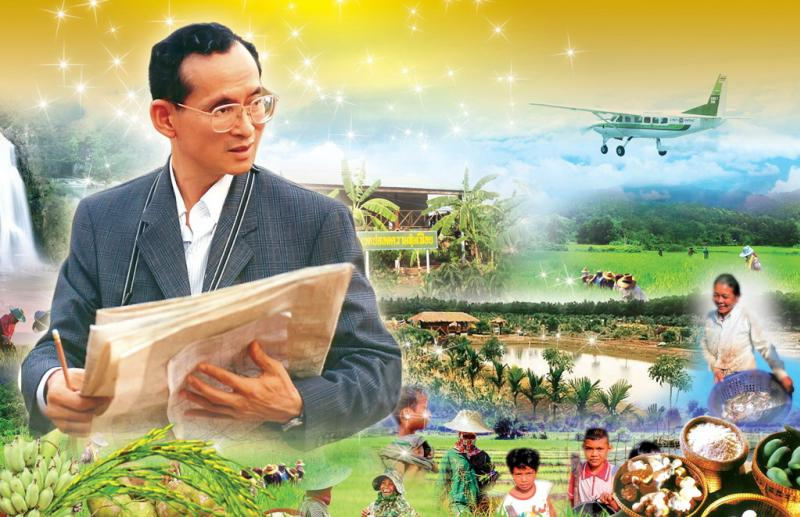

เมนูหลัก
หน้าหลัก
เศรษฐกิจพอเพียงคืออะไร
หลักปรัชญาของเศรษฐกิจพอเพียง
หลัก 3 ห่วง 2 เงื่อนไข
พระราชดำรัสเศรษฐกิจพอเพียง
ลิ้งที่เกี่ยวข้อง
โรงเรียนบ้านหนองคูโนนแก้วหนองอีย่า
สำนักงานคณะกรรมการการศึกษาขั้นพื้นฐาน
กระทรวงศึกษาธิการ
ผู้จัดทำ
|

จุดเริ่มต้นแนวคิดเศรษฐกิจพอเพียง
ผลจากการใช้แนวทางการพัฒนาประเทศไปสู่ความทันสมัย ได้ก่อให้เกิดการเปลี่ยนแปลงแก่สังคมไทยอย่างมากในทุกด้าน ไม่ว่าจะเป็นด้านเศรษฐกิจ การเมือง วัฒนธรรม
สังคมและสิ่งแวดล้อม อีกทั้งกระบวนการของความเปลี่ยนแปลงมีความสลับซับซ้อนจนยากที่จะอธิบายใน เชิงสาเหตุและผลลัพธ์ได้
เพราะการเปลี่ยนแปลงทั้งหมดต่างเป็นปัจจัยเชื่อมโยงซึ่งกันและกัน
สำหรับผลของการพัฒนาในด้านบวกนั้น ได้แก่ การเพิ่มขึ้นของอัตราการเจริญเติบโตทางเศรษฐกิจ ความเจริญทางวัตถุ และสาธารณูปโภคต่างๆ ระบบสื่อสารที่ทันสมัย
หรือการขยายปริมาณและกระจายการศึกษาอย่างทั่วถึงมากขึ้น แต่ผลด้านบวกเหล่านี้ส่วนใหญ่กระจายไปถึงคนในชนบท หรือผู้ด้อยโอกาสในสังคมน้อย แต่ว่า
กระบวนการเปลี่ยนแปลงของสังคมได้เกิดผลลบติดตามมาด้วย เช่น การขยายตัวของรัฐเข้าไปในชนบท ได้ส่งผลให้ชนบทเกิดความอ่อนแอในหลายด้าน
ทั้งการต้องพึ่งพิงตลาดและพ่อค้าคนกลางในการสั่งสินค้าทุน ความเสื่อมโทรมของทรัพยากรธรรมชาติ ระบบความสัมพันธ์แบบเครือญาติ
และการรวมกลุ่มกันตามประเพณีเพื่อการจัดการทรัพยากรที่เคยมีอยู่แต่เดิมแตก สลายลง ภูมิความรู้ที่เคยใช้แก้ปัญหาและสั่งสมปรับเปลี่ยนกันมาถูกลืมเลือนและเริ่ม สูญหายไป
สิ่งสำคัญ ก็คือ ความพอเพียงในการดำรงชีวิต ซึ่งเป็นเงื่อนไขพื้นฐานที่ทำให้คนไทยสามารถพึ่งตนเอง และดำเนินชีวิตไปได้อย่างมีศักดิ์ศรีภายใต้อำนาจและความมีอิสระในการกำหนด
ชะตาชีวิตของตนเอง ความสามารถในการควบคุมและจัดการเพื่อให้ตนเองได้รับการสนองตอบต่อความต้อง การต่างๆ รวมทั้งความสามารถในการจัดการปัญหาต่างๆ ได้ด้วยตนเอง
ซึ่งทั้งหมดนี้ถือว่าเป็นศักยภาพพื้นฐานที่คนไทยและสังคมไทยเคยมีอยู่แต่ เดิม ต้องถูกกระทบกระเทือน ซึ่งวิกฤตเศรษฐกิจจากปัญหาฟองสบู่และปัญหาความอ่อนแอของชนบท
รวมทั้งปัญหาอื่นๆ ที่เกิดขึ้น ล้วนแต่เป็นข้อพิสูจน์และยืนยันปรากฎการณ์นี้ได้เป็นอย่างดี
|